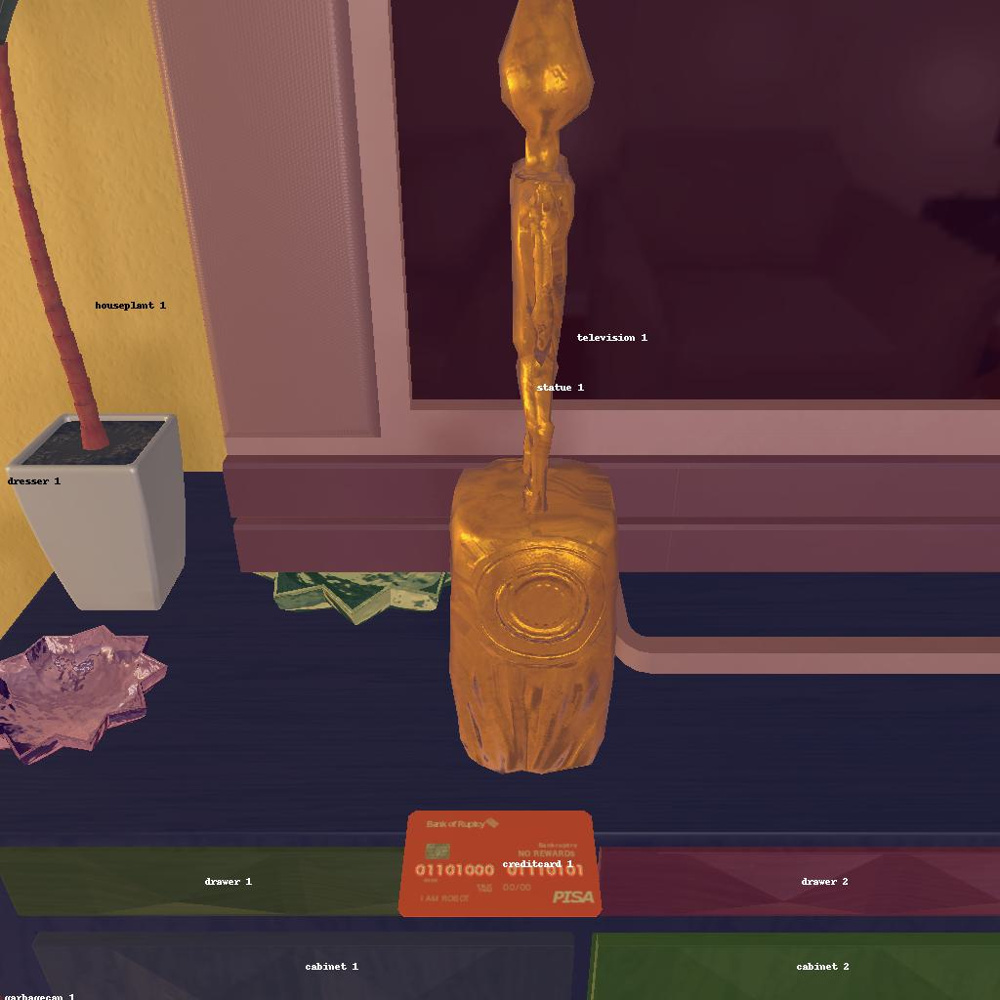

---------------------------------------------------------task: 7---------------------------------------------------------
--------------------------------------------------------------------------------------------------------------------------------------------------------------------
--------------------------------------------------------------------------------------------------------------------------------------------------------------------
Step:--------------------------------------------------------------------------7-------------------------------------------------------------------------------
----------------------------------------
VLM Prompt:
Image1:
Image2:
**Instruction**
1. Analyze the provided image to identify all visible household objects, focusing on those relevant to the task description "put some creditcard on coffeetable."
2. Use the analysis of the image and the task hint "The agent must find an object of the desired type, pick it up, find the correct location to place it, and put it down there." to answer the question: what is the most reasonable action in the choices for the task description "put some creditcard on coffeetable"?
4. Decide and write the answer using the template: The answer is: (i): , where i is the real number. If there is no desired object in the image, search every place based on **Initial Observation** to find the object. And if no one is exactly correct, choose a similar answer.
**Initial Observation**
You are in the middle of a room. Looking quickly around you, you can see armchair (1-2), dresser (1), garbagecan (1), cabinet (1-4), drawer (1-4), coffeetable (1), sidetable (1), sofa (1)
**Answer Choices**
(1): go to armchair 1
(2): go to armchair 2
(3): go to dresser 1
(4): go to garbagecan 1
(5): go to cabinet 1
(6): go to drawer 2
(7): go to cabinet 2
(8): go to drawer 3
(9): go to cabinet 3
(10): go to drawer 4
(11): go to cabinet 4
(12): go to coffeetable 1
(13): go to sidetable 1
(14): go to sofa 1
(15): open drawer 1
(16): close drawer 1
(17): put creditcard 1 in/on drawer 1
(18): examine creditcard 1
**Answer**
Let's think step by step by following the instructions.
----------------------------------------
----------------------------------------
Original Response:
The task is to put some creditcard on the coffeetable. In the images provided, we can see a creditcard located on the floor near the statue and television. Therefore, the agent does not need to search for the object as it is already visible in the image.
Based on the task description and the initial observation, the most reasonable action is to pick up the creditcard and place it on the coffeetable. However, the provided answer choices do not include an option to pick up the creditcard. The closest action related to the creditcard is to examine it, which could be a preliminary step before picking it up.
The answer is: (18): examine creditcard 1.
----------------------------------------
----------------------------------------
>>> Refine Original VLM Response and Get Pure Action: examine creditcard 1
----------------------------------------
-----------------------------------------------------------------
Running time: 42.155137062072754 seconds
Total Money: 3.116079999999999
-----------------------------------------------------------------
-----------------------------------------------------------------
Text Observation:This is a normal creditcard 1
-----------------------------------------------------------------
UNSUCCEED